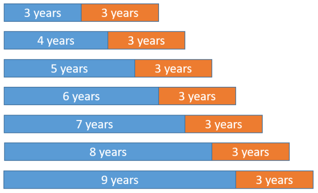

Predicción de series de tiempo#
Definición: Un proceso estocástico es una colección o familia de variables aleatorias \(\{X_{t}\}_{t\in I}\) ordenadas según el subíndice \(t\) que en general se suele identificar con el tiempo. Llamamos trayectoria del proceso a una realización del proceso estocástico. Si \(I\) es discreto, el proceso es en tiempo discreto. Si \(I\) es continuo, el proceso es en tiempo continuo.
Observación:
Por tanto, para cada instante \(t\) tendremos una variable aleatoria distinta representada por \(X_{t}\), con lo que un proceso estocástico puede interpretarse como una sucesión de variables aleatorias cuyas características pueden variar a lo largo del tiempo.
Un ejemplo de proceso en tiempo discreto se obtiene para \(I = \{1,\dots,n\}\). En este caso, el proceso es \(Y_{1}, Y_{2},\dots, Y_{n}\), y una trayectoria se denota por \(y_{1}, y_{2},\dots, y_{n}\). Un ejemplo de proceso en tiempo continuo se obtiene para \(I=[0, T], I=[0,\infty], I=(-\infty,\infty)\)
Definición: Una serie temporal es una realización parcial de un proceso estocástico de parámetro tiempo discreto, donde los elementos de \(I\) están ordenados y corresponden a instantes equidistantes del tiempo.
{kind=link}
Definición: Un proceso estocástico \((Y_{t})\) es estacionario cuando las propiedades estadísticas de cualquier secuencia finita \(Y_{t_{1}}, Y{t_{2}},\dots, Y{t_{n}}, (n\geq1)\) de componentes de \((Y_{t})\) son semejantes a las de la secuencia \(Y_{t_{1}+h}, Y_{t_{2}+h},\dots, Y_{t_{n}+h}\) para cualquier número entero \(h = \pm1, \pm2,\dots\)
Definición: Un proceso estocástico \((Y_{t})\) es no estacionario cuando las propiedades estadísticas de al menos una secuencia finita \(Y_{t_{1}}, Y{t_{2}},\dots, Y{t_{n}}, (n\geq1)\) de componentes de \((Y_{t})\), son diferentes de las de la secuencia \(Y_{t_{1}+h}, Y_{t_{2}+h},\dots, Y_{t_{n}+h}\) para al menos un número entero \(h>0\).
Definición: La covarianza entre \(y_{t}\) y su valor en otro periodo de tiempo, digamos, \(y_{t+k}\) se denomina autocovarianza en el retardo \(k\), y se define como
La colección de los valores de \(\gamma_{k}, k = 0, 1, 2,\dots\) se denomina función de autocovarianza. Obsérvese que la autocovarianza en el lag \(k = 0\) es simplemente la varianza de la serie temporal; es decir, \(\gamma_{0} = \sigma_{y}^{2}\), que es constante para una serie temporal estacionaria. El coeficiente de autocorrelación en el lag \(k\) para una serie temporal estacionaria es
La colección de los valores de \(\rho_{k}, k = 0, 1, 2,\dots\) se llama función de autocorrelación (ACF). La función
ACFpuede ser utilizada para seleccionar el orden \(q\) de un modeloMA(q).Definición: Un modelo para un proceso estocástico es cualquier conjunto de hipótesis bien definidas sobre las propiedades estadísticas de dicho proceso.
Introducción al modelo ARIMA#
Los modelos
ARIMA (Autorregresivo integrado de media móvil)aproximan los valores futuros de una serie temporal como una función lineal de observaciones pasadas y términos de ruido blanco. Una serie de tiempo \(y_{t}\) se llama un proceso de media móvil integrada autorregresiva (ARIMA) de órdenes \(p, d\), y \(q\), denotado ARIMA(\(p, d, q\)) si su diferencia \(d\) da lugar a un proceso estacionario ARMA(\(p, q\)). Por lo tanto, un ARIMA(\(p, d, q\)) puede escribirse como\[\Phi(B)(1-B)^{d}y_{t}=\delta+\Theta(B)\varepsilon_{t}\]where
\[\Phi(B)=1-\sum_{i=1}^{p}\phi_{i}B^{i}\quad\text{and}\quad\Theta(B)=1-\sum_{i=1}^{q}\theta_{i}B^{i},\]son los términos del operador back-shit en los AR(\(p\)) y MA(\(q\)) definidos como \(\Phi(B)y_{t}=\delta+\varepsilon_{t}\) y \(y_{t}=\mu+\Theta(B)\varepsilon_{t}\), con \(\delta=\mu-\phi\mu\), donde \(\mu\) es la media y \(\varepsilon_{t}\) el ruido blanco con \(E(\varepsilon_{t})=0\).
Así, una vez realizada la diferenciación y una serie temporal estacionaria \(w_{t}=(1-B)^{d}y_{t}\) es obtenida, los métodos autoregresivo de orden \(p\): AR(\(p\)) y media movil de orden \(q\): MA(\(q\)) pueden ser aplicados para tener un modelo completo.
Implementación del modelo ARIMA#
Durante esta sección estudiaremos el uso de las APIs para cargar datos de interes de estudio, los cuales en esta sección corresponden a series de tiempo financieras, especificamente la serie de tiempo de las acciones de Apple cotizadas en bolsas de valores será considerada.
En las secciones pasadas los datos eran cargados a un
DataFrameusando la funciónread_csvde Python utlizando el link degithuben formatorawo simplemente con la dirección del directorio local donde reposaba el archivo en formato CSV que deseabamos cargar, en éste caso utlizaremos un protocolo de internet intermediario que nos permitirá obtener dichos datos.Las series de tiempo financieras son de gran interés personal, pero estos modelos pueden ser aplicados a cualquier tipo de proceso discreto que requiera de predicciones para la correcta toma de decisiones.
¿Qué es una API? API es el acrónimo de Application Programming Interface (Interfaz de Programación de Aplicaciones), que es un intermediario de software que permite que dos aplicaciones se comuniquen entre sí. Cada vez que usas una aplicación como Facebook, envías un mensaje instantáneo o consultas el tiempo en tu teléfono, estás usando una API. En su mayoría las API son privadas, algunas como la de
yahoo financeson libres hasta cierto límite, y para ciertofuturosyderivadosespecificos. Algunas entregan una versión de prueba, luego cuando la compañia que la ofrece nota un gran número de consultas (queries) por medio de su API a sus servidores desde una IP determinada, o de unBotpor ejemplo que hayas programado, comienzas a obtener mensajes de error direccionados a tu IP revocando la conexión. Otra opción interesante esQuandl, pero desafortunadamente ahora es adquisición deNasdaqy lo más seguro es que exisitrán ciertos costos para el uso de la API que no existian antes.
Yahoo Finance#
Una opción gratuita, en el caso de que no desee pagar por los servicios de APIs tales como la de finnhub, es Yahoo Finance. En esta sección estudiaremos como hacer uso de la API de Yahoo Finance y además, como podemos descargar la información necesaria para un EDA y graficos de velas por ejemplo.
Descargaremos para este ejemplo los datos de las acciones de Apple utilizando la API de yahoo Finance. Para esto debe primero que todo, debe instalar la librería que le permitirá hacer uso de API
pip install yfinance
Para usar la API, solo tiene que crear un objeto ticker con su respectivo símbolo, y luego puede realizar simples queries a métodos en el objeto que devuelven todo lo necesario par analizar series de tiempo financieras. Si usamos la función
.info()podemos acceder a toda la información que podemos consultar sobre una acción
import warnings
warnings.filterwarnings("ignore")
import yfinance as yf
msft = yf.Ticker("AAPL")
msft.info
yahoo_fines otra biblioteca de código abierto completamente gratuita similar ayfinance, desarrollada por el autor de theautomatic. Carece de análisis de mercado/noticias, aunque ofrece una buena gama de datos de fundamentos y opciones. Puede consutlar cada uno de los atributos de esta librería, a los cuale puede hacer en yahoo_fin-documentation. Para instalarla utilice la siguiente orden:
pip install yahoo_fin
yahoo_fintambién tiene algunas dependencias:ftplib, io, pandas, requests, requests_html. Con la exsepción derequests_html, todos ellos deberían venir preinstalados conminiconda. Para instalarrequests_htmlutilice:
pip install requests_html
Para descargar datos históricos utilizando la biblioteca
yahoo_fin, el método a utilizar es esget_data(). Tendremos que importarlo desde el módulostock_info
from yahoo_fin.stock_info import get_data
Esta función toma los argumentos
ticker: ticker de la acción/bono deseado, sin distinción entre mayúsculas y minúsculasstart_date: fecha de inicio de los datos (mm/dd/aaaa)end_date: fecha en la que desea que finalicen los datos (mm/dd/aaaa)index_as_date: {True, False}. Por defecto esTrue. Si esTrueentonces las fechas de los registros se establecen como el índice, de lo contrario se devuelven como una columna separada.interval: {“1d”, “2wk”, “1mo”}. Se refiere al intervalo para muestrear los datos: “1d”= diario, “1wk”= semanal, “1mo”=mensual.
Por ejemplo, usemos la función
get_data()para obtener los datos asociados con la acción de Apple cuyo símbolo esAAPL, de la siguiente manera:
from datetime import datetime, timedelta
import seaborn as sns
import matplotlib.pyplot as plt
Usamos las funciones
set_theme()para configurar el tema a usar en las figuras, en éste caso paper el cual invocamos usandoset_context("paper"). Para ver más temas para figuras conseabornvisitar aesthetics.
sns.set_theme()
sns.set_context("paper")
stock = 'AAPL'
resolution = '1d'
end_date = datetime.now()
start_date = end_date - timedelta(days=365)
def date_format(date_h):
return date_h.strftime('%d/%m/%Y')
AAPL_df = get_data(stock, start_date=start_date, end_date=end_date, interval=resolution, index_as_date=False)
AAPL_df.head()
Utilizaremos la función
lineplotdeseabornpara realizar un gráfico de la serie de tiempo de interés. Nótese que se ha colocado;al final de éste llamado, ¿con que objetivo?
sns.lineplot(data=AAPL_df, x=AAPL_df.date, y=AAPL_df.close);
Gráficos de velas en Python: El gráfico de velas es un estilo de gráfico financiero que describe la apertura, el máximo, el mínimo y el cierre para una coordenada \(x\) determinada (probablemente la hora). Los recuadros representan la dispersión entre los valores de apertura y cierre y las líneas representan la dispersión entre los valores bajos y altos. Los puntos de muestra en los que el valor de cierre es mayor (menor) que el de apertura se denominan crecientes (decrecientes).
Por defecto, las velas crecientes se dibujan en verde, mientras que las decrecientes se dibujan en rojo. Para realizar la figura usamos la función
Figure()de la clasegodeplotly, esta función recibe como input los datos asociados al candlestick suministrados por medio de la funciónCandlesticktambién de la clasegodeplotly
import plotly.graph_objects as go
fig = go.Figure(data=[go.Candlestick(x = AAPL_df.date,
open = AAPL_df.open,
high = AAPL_df.high,
low = AAPL_df.low,
close = AAPL_df.close)
])
fig.update_layout(
title="Apple Inc. (AAPL)",
xaxis_title="Day",
yaxis_title="AAPL-USD",
font=dict(
family="Courier New, monospace",
size=12,
color="RebeccaPurple"
)
)
fig.update_layout(xaxis_rangeslider_visible=False)
fig
Utilizaremos ahora una prueba estadística para verificar si la serie de tiempo es estacionaria o no. Esta prueba es la de
Dickey-Fuller. En cursos avanzados de series de tiempo se estudian las matemáticas detrás de este tipo de pruebas así como los plots ACF y PACF, en esta sección solo mencionaremos en una bastante resumida la idea detrás de su uso.Para hacer uso de esta prueba importamos la función
adfullerde la clasestatsmodels.tsa.stattools. Para aplicar el test pasamos los datos del precio de cierre, serie de tiempo de interés, usandoAAPL_df.close. Este será el argumento de la funciónadfullerencargada de realizar el test deDickey-Fuller
from statsmodels.tsa.stattools import adfuller
from numpy import log
result = adfuller(AAPL_df.close)
print('ADF Statistic: %f' % result[0])
print('p-value: %f' % result[1])
El razonamiento asociado a esta prueba de hipótesis es basado en inferencia a partir del \(p-\)value. Si \(p-\)value > 0.05 no rechazamos nuestra hipótesis inicial con una significancia de 0.05
Realizaremos ahora figuras de autocorrelación para confirmar que la serie de tiempo diferenciada es estacionaria, así como también para verificar cuál es el orden de integración necesario para llevar nuestra serie de tiempo no estacionaria a una estacionaría. Para esto usaremos la función
plot_acfde Python, la cual recibe como argumentos, la serie de tiempo de interés y el número de lags que deseamos considerar en la figura.Nótese que utilizamos la función
.diff()para realizar diferenciación en nuestra serie de tiempo, con el objetivo de remover tendencia, además nótese también que se eliminan valoresnanque podamos obtener en este proceso debido a que esta figura consiste en representar todos los valores \(\rho_{k}\) definidos anteriormente, donde aparece un cociente para el cual evitamos valores nulos en el denominador.Realizaremos tres figuras, correspondientes a la autocorrelación de la serie original, la serie diferenciada una vez, y dos veces. Colocaremos estas figuras en una matriz de \(3\times2\) usando la función
fig, axes = plt.subplots(3, 2, sharex=True)dematplotlib.
import numpy as np, pandas as pd
from statsmodels.graphics.tsaplots import plot_acf
import matplotlib.pyplot as plt
import numpy as np
plt.rcParams.update({'figure.figsize': (15,15)})
fig, axes = plt.subplots(3, 2, sharex=True)
axes[0, 0].plot(AAPL_df.close); axes[0, 0].set_title('Original Series')
plot_acf(AAPL_df.close, ax=axes[0, 1], lags = 240);
axes[1, 0].plot(AAPL_df.close.diff()); axes[1, 0].set_title('1st Order Differencing')
plot_acf(AAPL_df.close.diff().dropna(), ax=axes[1, 1], lags = 240);
axes[2, 0].plot(AAPL_df.close.diff().diff()); axes[2, 0].set_title('1st Order Differencing')
plot_acf(AAPL_df.close.diff().diff().dropna(), ax=axes[2, 1], lags = 240);
Nótese el decaimiento geométrico en la primera figura de autocorrelación, que baja desde la parte positiva con una tendencia lineal, el cual se interpreta como una autocorrelación asociada a una serie de tiempo no estacionaría, como indica la prueba de
Dickey-Fullerque presenta efectivamente tendencias.Los intervalos de confianza se dibujan como un cono. Por defecto, se establece un intervalo de confianza del 95%. Al observar el gráfico de autocorrelación para la segunda diferenciación, la segunda autocorrelación entra en la zona negativa con bastante rapidez, lo que indica que la serie podría haber sido sobrediferenciada.
Criterios AIC, BIC, HQIC#
El
AIC, BIC, HQICutilizan la estimación de máxima verosimilitud (Log Likelihood) de un modelo como medida de ajuste. Los valores deAIC, BIC, HQICson bajos para los modelos con Log Likelihood altos. Esto significa que el modelo se ajusta mejor a los datos, que es lo que queremos. Por ejemplo,AICse define de la siguiente forma: \(AIC=2k-2\ln(L)\), donde \(k\) es elnúmero de parámetrosen el modelo estadístico, y \(L\) es el máximo valor de la función de verosimilitud para el modelo estimado.Al ajustar modelos, es posible aumentar la verosimilitud añadiendo parámetros, pero hacerlo puede dar lugar a un sobreajuste. Tanto el
BICcomo elAICintentan resolver este problema introduciendo un término de penalización por el número de parámetros del modelo; el término de penalización es mayor en elBICque en elAICpara tamaños de muestra superiores a 7.BICestá definido como \(BIC=k\ln(n)-2\ln(L)\), donde aquí \(n\) representa el tamaño de la muestra. El criterio de información de Hannan–Quinn (HQIC) está dado por \(HQIC=2k\ln(\ln(n))-2\ln(L)\). Este criterio reduce la penalización deBIC, de tal forma que en términos de penalización se ubica entreAICyBIC. La selección del criterio va a depender del objetivo principal del investigador.
n_AAPL = len(AAPL_df.close); n_test = 28 # This can be changed
train_size = n_AAPL - n_test
train = AAPL_df.close[:train_size]
dates_train = AAPL_df.date[:train_size]
test_4w = AAPL_df.close[train_size:train_size + n_test]
dates_4w = AAPL_df.date[train_size:train_size + n_test]
print("train:", train.shape)
print("test_4w:", test_4w.shape)
train_df = AAPL_df[["close"]][:train_size]
test_4w_df = AAPL_df[["close"]][train_size:train_size + n_test]
test_4w_df.head()
Utlizamos ahora el modelo
ARIMAimportado desde la libreríastatsmodelsde Python para obetener distintos ARIMA de ordenes \(p,d,q\). Consideramosmethod = 'mle'para el cálculo de la verosimilitud exacta a través del filtro de Kalman. Como ejercicio puede reescribir estas líneas de código en una función que dependa sólo del inputtrainy retorne los ordenes \(p, d, q\) asociados al criterio AIC de bondad de ajuste
from statsmodels.tsa.arima.model import ARIMA
import warnings
warnings.filterwarnings("ignore")
best_aic = np.inf
best_bic = np.inf
best_order = None
best_mdl = None
pq_rng = range(5)
d_rng = range(3)
for i in pq_rng:
for d in d_rng:
for j in pq_rng:
try:
# print(i, d, j)
tmp_mdl = ARIMA(train, order=(i,d,j)).fit()
tmp_aic = tmp_mdl.aic
if tmp_aic < best_aic:
best_aic = tmp_aic
best_order = (i, d, j)
best_mdl = tmp_mdl
except: continue
print('aic: {:6.5f} | order: {}'.format(best_aic, best_order))
Existe una función llamada
auto_arimade Python la cual es útli en ciertos casos especificos. Éste no es uno de ellos dado que el modelo ARIMA que entrega es un simple random walk \(x_{t}=x_{t-1}+\omega_{t}\), el cual predice puramente como un modelo estocástico con dependencia temporal basado totalmente en el punto temporal anterior \(t-1\)
import pmdarima as pm
model = pm.arima.auto_arima(train, start_p=1, start_q=1,
test='adf', # use adftest to find optimal 'd'
max_p=3, max_q=3, # maximum p and q
m=1, # frequency of series
d=None, # let model determine 'd'
seasonal=False, # No Seasonality
start_P=0,
D=0,
trace=True,
error_action='ignore',
suppress_warnings=True,
stepwise=True)
Por lo tanto para éste problema consideramos los mejores ordenes \(p, d, q\) obtenidos a a partir del criterio de Akaike. Los usamos como argumento de entrada en nuestro modelo ARIMA junto a nuestro train set, para obtener el modelo de ajustado de interés que utlizaremos para predecir valores futuros usando rolling
from statsmodels.graphics.tsaplots import plot_predict
model = ARIMA(train, order=best_order)
model_fit = model.fit()
Para graficar el ajuste de nuestro modelo ARIMA frente a nuestro conjunto de entrenamiento utilizamos la función
plot_predictque proviene del objeto instanciado usando la función ARIMA.
plt.rcParams.update({'figure.figsize': (10,6)})
fig, ax = plt.subplots();
plot_predict(model_fit, 1, ax=ax);
plt.show();
Para medir el error de predicción cometido en las predicciones, utilizaremos las métricas usuales en análisis de series de tiempo:
MAPE, MAE, RMSE, MSE
from sklearn.metrics import r2_score
def forecast_accuracy(forecast, actual, str_name):
mape = np.mean(np.abs(forecast - actual)/np.abs(actual)) # MAPE
mae = np.mean(np.abs(forecast - actual)) # MAE
rmse = np.mean((forecast - actual)**2)**.5 # RMSE
mse = np.mean((forecast - actual)**2) # MSE
r2 = r2_score(forecast, actual)
df_acc = pd.DataFrame({'MAE': [mae],
'MSE': [mse],
'MAPE': [mape],
'RMSE': [rmse],
'R2': [r2]},
index=[str_name])
return df_acc
Rolling forecast#
Realizamos ahora predicciones utilizando rolling forecasting. El rolling forecast entrega reportes que utilizan datos históricos para predecir cifras futuras de forma continua durante un periodo de tiempo. Las previsiones continuas se utilizan a menudo en los reportes financieros, la gestión de la cadena de suministro, la planificación y la elaboración de presupuestos.
El rolling forecast es una ayuda esencial para tomar decisiones empresariales acertadas. Gracias a su capacidad de respuesta, las previsiones continuas ayudan a las empresas a responder más rápidamente a las condiciones cambiantes del mercado. Si se utilizan con eficacia, las previsiones continuas pueden ayudar a identificar las deficiencias de rendimiento, acortar los ciclos de planificación y tomar la mejor decisión para los resultados. Para nuestros ejemplos, nuestro horizonte de predicción será de un día

def arima_rolling(history, test):
predictions = list()
for t in range(len(test)):
model = ARIMA(history, order=best_order)
model_fit = model.fit()
output = model_fit.forecast()
yhat = output[0]
predictions.append(yhat)
obs = test[t]
history.append(obs)
print('predicted=%f, expected=%f' % (yhat, obs))
return predictions
test_4wl = test_4w.tolist()
yhat_4w = arima_rolling(train.tolist(), test_4wl)
Utilizaremos ahora las funciones creadas anteriormente para calcular el error de predicción y
lineplotpara graficarle junto a la serie de tiempo original de test
forecast_accuracy(np.array(test_4wl), np.array(yhat_4w), "week 1")
ax = sns.lineplot(x=dates_train[-100:], y=train[-100:], label="Train", color='g')
sns.lineplot(x=dates_4w, y=test_4wl, label="Test", color='b')
sns.lineplot(x=dates_4w, y=yhat_4w, label="Forecast", color='r')
plt.show()
Observación
Cuando se utiliza rolling forecasting en la predicción de series temporales, es posible que se encuentren valores de \(R^{2}\) negativos para horizontes de predicción pequeños debido a varias razones:
Datos Limitados: Con un horizonte de predicción pequeño, puede haber una cantidad limitada de datos disponibles para que el modelo capture con precisión los patrones subyacentes en la serie temporal. Esta limitación puede conducir a predicciones menos confiables, lo que resulta en valores de \(R^{2}\) negativos.
Sobreajuste del Modelo: Para horizontes de predicción pequeños, el modelo puede volverse demasiado complejo y ajustarse demasiado a la aleatoriedad o las fluctuaciones en los datos en lugar de la tendencia subyacente. Este sobreajuste puede hacer que las predicciones del modelo funcionen mal cuando se aplican a nuevos datos, lo que resulta en valores de \(R^{2}\) negativos.
Variación Aleatoria: En los datos de series temporales, puede haber una aleatoriedad inherente o variabilidad que el modelo no logra capturar, especialmente con un horizonte de predicción pequeño. Como resultado, las predicciones del modelo pueden desviarse significativamente de los valores reales, lo que lleva a valores de $R^{2} negativos.
Error de Medición: Los horizontes de predicción pequeños pueden amplificar los errores de medición o las inexactitudes en los datos, lo que lleva a un peor rendimiento del modelo y valores de \(R^{2}\) negativos.
Ejercicio para entregar#
Considere la serie de tiempo asociada con los futuros de la criptomoneda Bitcoin desde que comenzó a comercializarse hasta la fecha del día de hoy. Utilice la API de
Yahoo Financepara obtener esta serie de tiempo.Repita TODOS los pasos indicados en esta sección para encontrar modelos ARIMA para predecir el precio de Bitcoin con los siguientes horizontes: 7, 14, 21 y 28 días. Utilizar siempre predicciones usando rolling con ventana de predicción continua de un día. Cualquier cantidad de pasos extra para enriquecer su análisis predictivo serán aceptados siempre y cuando sean acordes con lo que indica la teoría de análisis de series de tiempo.
{kind=link}
Repita el paso 2 ahora sin utilizar rolling. Esto es, realice el pronóstico solo utilizando
forecast()para los diferentes horizontes de predicción, 7, 14, 21 y 28 días.Realice tablas de error para los ítems 1 y 2, utilizando las métricas:
MAPE, MAE, RMSE, MSE, R2. Además, agregue el gráfico de correlación entre la observación real y su predicción en el test, \(\text{Corr}(y_{t}, \tilde{y}_{t})\).Repita el análisis desarrollado en los pasos anteriores, considerando ahora el criterio de inferencia Bayesiana (BIC) y el criterio de información de Hannan–Quinn (HQIC) para encontrar el mejor modelo ARIMA y, compare los errores con aquellos obtenidos con el criterio de Akaike.
Escriba en cada paso las conclusiones y análisis estadísticos asociados con los resultados obtenidos. Realice tests de normalidad e independencia para los residuales obtenidos para cada predicción, en cada caso agregue las correspondientes conclusiones. Figuras y algoritmos que no estén acompañados de una conclusión, descripción y análisis estadístico, no serán tenidas en cuenta.